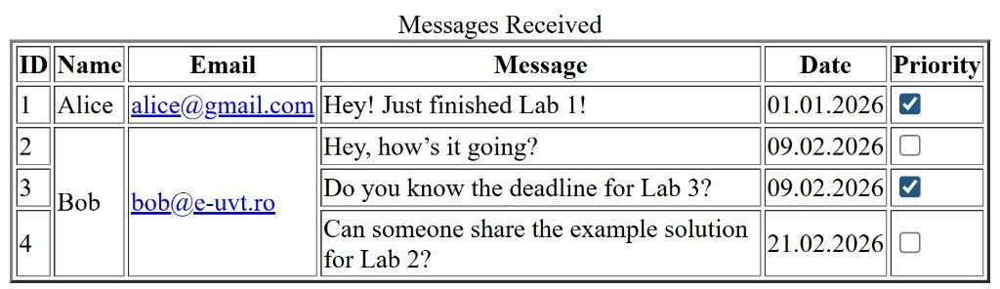

Lab 3 - HTML Tables
Duration: .
This lab continues from Lab 2: you keep the same Git and GitHub Pages workflow and
add several HTML tables to the two pages already created in your site.
You will use semantic table markup such as <table>, <tr>,
<th>, and <td> to organize information in rows and columns.
See Lecture 1 - HTML Tables and
Resources.
On this page: Overview · Lab setup · HTML Tables · Task 1 · Task 2 · Task 3 · Task 4 · Extra · References.
Overview
Objectives
- Clone Lab 2 repository to continue working on your course site with the same Git/GitHub Pages workflow
- Create three HTML tables:
- Two tables on the index page: one for personal skills and one for personal project portfolio
- One table on the contact/feedback page to display received messages
- Each table will have a different requirement: recreate from image, complete given code, or build based on a textual description
- Commit changes to your GitHub Classroom Lab 3 assignment.
Concepts
- HTML Tables:
<table>,<tr>,<th>,<td>,colspan,rowspan - Table design approaches: recreate table from image, complete partially written table code, create table from textual description
- Git/GitHub workflow: clone repository, commit, push, and link updates to GitHub Pages
Tasks (see sections below): clone Lab 2 → add two tables on index page (skills + portfolio) → add one table on contact/feedback page (messages) → follow the specific instructions for each table → commit and push changes → HTML validation.
Deliverable: Three fully functional HTML tables added to the appropriate pages, each completed according to its instructions, committed to your GitHub Classroom Lab 3 repository and HTML validated.
Lab setup
Before starting, ensure you have completed Lab 2 and have access to your course homepage and your private Lab 2 repo. For Lab 3 you will need the same tools: a code editor, Git, and a browser. Use the task order below; the final step is pushing to GitHub (Task 4).
- Setup and page structure: Accept the Lab 3 assignment, clone your Lab 2 repository, and continue working on the existing pages. Prepare the two pages for tables: the index page and the contact/feedback page.
- Create HTML tables:
- Index page: add two tables
- Personal Skills table – complete the provided table code by filling in the dotted parts (
…) according to instructions, keeping the existing structure intact - Portfolio table – create this table based on a textual description
- Personal Skills table – complete the provided table code by filling in the dotted parts (
- Contact/Feedback page: add one table to display messages – recreate the table from the provided image
- Index page: add two tables
- HTML validation: Validate all pages using the W3C validator; fix any errors. Your HTML must pass validation before committing or pushing changes.
- Commit and push: Commit your validated changes and push them to your GitHub Classroom Lab 3 assignment.
HTML Tables
Tables are used to organize data in rows and columns. They are ideal for displaying structured information such as schedules, statistics, project portfolios, or contact lists. A well-structured table improves readability, accessibility, and allows browsers and screen readers to interpret the data correctly.
Basic table elements
An HTML table consists of several elements:
<table>– the container for the entire table. Optionally, you can add a<caption>to describe the table.<thead>– groups the header row(s) of the table. Headers are typically bold and help define columns.<tbody>– contains the main body rows of the table.<tfoot>– optional section for footer rows, such as totals or summaries.<tr>– table row, can contain header cells (<th>) or data cells (<td>).<th>– table header cell. Usescopeto indicate whether it is a column or row header (improves accessibility).<td>– table data cell, contains regular content.
Attributes and special properties
Some useful attributes and properties include:
colspan– makes a cell span multiple columns.rowspan– makes a cell span multiple rows.scope– used in<th>cells to indicate which cells the header applies to. Helps screen readers announce correctly which header relates to each data cell. Common values:col– column header;row– row header;colgroup– group of columns;rowgroup– group of rows.headers– optional attribute on<td>linking it to a header<th>.caption– a title describing the table, usually placed above it.
Simple table example
Example of a simple table showing basic personal skills:
<table border="1">
<caption>Personal Skills</caption>
<tr>
<th scope="col">Skill</th>
<th scope="col">Level</th>
</tr>
<tr>
<td>HTML</td>
<td>Advanced</td>
</tr>
<tr>
<td>CSS</td>
<td>Intermediate</td>
</tr>
</table>
Complex table example
This complex table demonstrates thead, tbody, tfoot, colspan, rowspan, and nested lists:
<table border="1">
<caption>Personal Skills and Certifications</caption>
<thead>
<tr>
<th scope="col">Skill</th>
<th scope="col">Level</th>
<th scope="col">Years</th>
<th scope="col">Certifications</th>
</tr>
</thead>
<tbody>
<tr>
<th scope="row">HTML</th>
<td>Advanced</td>
<td>5</td>
<td><ul><li>MDN</li><li>W3C</li></ul></td>
</tr>
<tr>
<th scope="row">CSS</th>
<td>Intermediate</td>
<td>4</td>
<td rowspan="2"><ul><li>Responsive Design</li><li>CSS Grid</li></ul></td>
</tr>
<tr>
<th scope="row">JavaScript</th>
<td>Beginner</td>
<td>2</td>
</tr>
<tr>
<th scope="row" colspan="2">Python & Data Analysis</th>
<td>3</td>
<td><ul><li>DataCamp</li></ul></td>
</tr>
</tbody>
<tfoot>
<tr>
<td colspan="3">Total Skills</td>
<td>4</td>
</tr>
</tfoot>
</table>
Additional tips
- Use
<caption>to describe the table for all users, including screen reader users. - Always define
scope="col"orscope="row"for headers. - Merge cells only when it improves readability, using
colspanorrowspan. - Keep tables simple, clean, and avoid using them for page layout.
- Use CSS for styling instead of deprecated attributes like
border. - Tables can contain other HTML elements such as
<ul>,<ol>,<a>links, and images.
References: MDN – HTML Table, W3C – Tables Accessibility.
Task 1 – Accept Lab 3 assignment and clone Lab 2
Start by accepting the Lab 3 assignment on the course platform. While logged into GitHub, click Accept this assignment to create your Lab 3 private repository.
Next, open your local project for Lab 2 and make a clone in the Lab 3 repository. This cloned project will serve as the starting point for Lab 3. Ensure that both the index page and the contact/feedback page from Lab 2 are included, as you will modify them to add the required tables for Lab 3.
Task 2 – Create tables for Lab 3
For Lab 3, you will add three tables across your site pages. Use semantic HTML with <table>, <thead>, <tbody>, <tfoot>, <th> with scope, and <caption> where appropriate.
Exercise 1. – Messages table on contact/feedback page
Using the provided image, recreate the table of messages received on your contact/feedback.html page. Include all IDs, names, emails, messages, dates, and priority cells. Use rowspan where multiple messages belong to the same sender, and include mailto: links for email addresses. Add a caption describing the table.

Exercise 2. – Personal Skills table on index page
On the index.html page, complete the provided table skeleton by filling in the dotted parts (…) and missing attributes:
<table border="...">
<...>
<tr>
<th scope="col" colspan="...">Personal Skills</th>
</tr>
</thead>
<...>
<tr>
<... scope="row" rowspan="3">...</th>
<td>...</td>
<td>JavaScript</td>
</tr>
<...>
<td>C/C++</td>
<td>...</td>
</tr>
<tr>
<td>Java</td>
<td>-</td>
</tr>
<tr>
<th scope="..." rowspan="...">Design</th>
<td colspan="...">Figma</td>
</tr>
<...>
<td colspan="2">...</td>
</tr>
<tr>
<td colspan="2">Photoshop</td>
</tr>
<tr>
<td colspan="2">UI/UX</td>
</tr>
<tr>
<th ...="row">Other</th>
<td colspan="...">Git</td>
</...>
</tbody>
</...>
Exercise 3. – Personal projects portfolio table on index page
On index.html, create a complex table to display your personal projects portfolio. The table should include:
- A
<caption>describing the table. - A header row (
<th>) with column titles: Project Name, Description, Technologies, Difficulty, Link, ETC. - For the Technologies column, include an unordered list (
<ul>) of technologies used in the project. - For the Difficulty column, include a
<select>element with options: Low, Medium, High. - For the Link column, include a hyperlink (
<a>) pointing to your project repository or live demo (e.g., GitHub link). - Use
colspanorrowspanwhere appropriate to combine cells for better layout and readability. - Use proper
scopeattributes for accessibility.
Task 3 – Push, publish, and submit Lab 3
After completing all table exercises and page updates, make sure your repository for Lab 3 contains:
index.html– the homepage with the navigation link to the form page and the two tables (Personal Skills, Portfolio).contact.html(orfeedback.html) – the form page with the Messages table recreated from the provided image.
Push your final changes to the Lab 3 repository. Open the live GitHub Pages URL and confirm that:
- Both pages load correctly.
- Navigation links between index and the form page work.
- All three tables render as intended, including correct
rowspan,colspan, lists, dropdowns, and links.
Task 4 – HTML validation
As the final step for Lab 3, ensure that all your pages are HTML validated. Use the W3C Markup Validation Service to check each page (index and your form page) via file upload or pasted source.
- Fix all errors and warnings reported by the validator.
- Check that all tables render correctly and are semantically correct (
<th>withscope,caption,rowspan,colspan, lists, dropdowns, and links). - After fixing issues, push the corrected files to your Lab 3 repository.
Your Lab 3 deliverable is complete only when both index.html and the form page pass validation with no errors. If you find issues after submitting, fix and push them again; the grader may re-check your live site.
Extra work
Extra work [1]: Complete exercises 7-1, 11-1, and 11-2 from the primary textbook (see Resources - Bibliography [1] and Assignments).